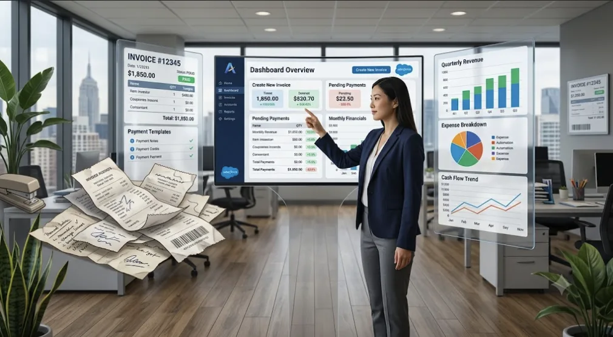

Le guide ultime pour comparer et choisir son logiciel de facturation en 2026
L'année 2026 marquera un tournant décisif pour les entreprises avec la généralisation de la facturation électronique. Si cette transition vise à simplifier les échanges et sécuriser les données fiscales, elle impose avant tout aux dirigeants de repenser entièrement leur système de gestion. Face à l'abondance d'offres sur le marché, effectuer une recherche de facturation par soi-même peut vite ressembler à un parcours du combattant. Les promesses des éditeurs sont nombreuses, les fonctionnalités parfois complexes à décrypter, et le risque de se tromper est réel. C'est pourquoi choisir le bon outil ne doit pas se faire au hasard ou sur la base d'une simple publicité. L'utilisation d'un comparateur indépendant s'impose aujourd'hui comme la méthode la plus fiable et la plus rapide pour auditer le marché. Dans ce guide ultime, nous vous expliquons pas-à-pas comment analyser vos besoins, décoder les offres et trouver enfin le logiciel qui accompagnera la croissance de votre entreprise en toute sérénité.

Comprendre la nécessité d'une méthodologie stricte
La précipitation est le pire ennemi du dirigeant lorsqu'il s'agit de renouveler son infrastructure informatique. Beaucoup d'entreprises entament leur recherche de facturation sans avoir préalablement cartographié leurs processus internes. Résultat : elles finissent par payer pour des usines à gaz dont elles n'utilisent que 10 % des capacités, ou à l'inverse, elles se retrouvent bloquées par un outil gratuit incapable d'évoluer. Pour bien choisir, il faut d'abord établir un cahier des charges précis. Prenez une heure avec vos équipes pour lister les points de friction actuels : perdez-vous trop de temps sur les relances clients ? Vos devis sont-ils difficiles à transformer en factures ? Votre expert-comptable se plaint-il du format de vos exports ? Ces réponses seront votre boussole.
Les limites d'une recherche de facturation classique
Une fois le cahier des charges rédigé, le réflexe naturel est de chercher sur les moteurs de recherche. Cependant, une simple requête web vous enferme dans une bulle algorithmique. Vous ne verrez que les logiciels qui ont le budget marketing le plus imposant. Ces outils grand public sont d'excellentes solutions, mais sont-ils taillés pour la spécificité de votre métier ? Un artisan du bâtiment n'a pas les mêmes obligations de facturation (retenues de garantie, situations de travaux) qu'un consultant freelance ou qu'un e-commerçant. C'est ici que la recherche manuelle montre ses limites : elle ne prend pas en compte le contexte unique de votre entreprise.
Le rôle central du comparateur dans votre décision
C'est exactement pour combler cette faille que le comparateur de logiciels a été créé. Plutôt que de vous laisser errer dans une jungle commerciale, un comparateur agit comme un filtre intelligent. En vous posant des questions stratégiques sur votre taille, votre typologie de clients (B2B ou B2C) et vos priorités, il élimine instantanément les logiciels inadéquats. Utiliser un comparateur, c'est l'assurance d'obtenir une sélection sur-mesure de deux ou trois outils qui cochent absolument toutes vos cases. C'est un gain de temps massif et une garantie de neutralité dans votre processus de décision.
Les critères techniques incontournables pour 2026
Au-delà de la simplicité d'utilisation, votre choix doit être dicté par la conformité légale. Votre futur logiciel doit être en mesure d'éditer des factures au format Factur-X (un fichier hybride PDF et XML) et de se connecter facilement au Portail Public de Facturation (PPF) ou à une Plateforme de Dématérialisation Partenaire (PDP). Sans cela, vous serez dans l'illégalité dès le déploiement de la réforme. Vérifiez également les options de connectivité : votre logiciel de facturation doit idéalement pouvoir s'interfacer avec votre banque pour le rapprochement bancaire automatique, et proposer un export natif vers l'outil de votre cabinet d'expertise comptable.
Testez avant de vous engager définitivement
Une fois que le comparateur a fait ressortir les meilleurs candidats, l'étape finale pour bien choisir consiste à tester l'ergonomie. La majorité des éditeurs fiables proposent une période d'essai gratuite de 14 ou 30 jours, ou a minima une démonstration vidéo interactive. Profitez de cette opportunité pour créer une facture fictive, générer un devis, et tester la réactivité du service client. L'outil doit être intuitif, non seulement pour vous, mais aussi pour les éventuels collaborateurs qui l'utiliseront au quotidien. Si la prise en main nécessite des heures de formation complexes, c'est probablement que le logiciel n'est pas adapté à votre structure.
Conclusion
Le passage à la facturation électronique est une obligation légale, mais c'est avant tout un levier de productivité exceptionnel si l'on est bien équipé. Ne laissez pas une recherche de facturation hasardeuse compromettre la gestion de votre activité. Prenez le contrôle de cette transition en définissant vos besoins réels et en vous appuyant sur la puissance de calcul d'un comparateur indépendant. En prenant le temps de bien choisir aujourd'hui, vous garantissez à votre entreprise une comptabilité saine, automatisée et 100 % conforme pour affronter les défis de 2026.
Foire Aux Questions (FAQ)
Pourquoi est-il urgent de changer son logiciel de facturation ? La législation française impose un passage progressif à la facturation électronique dès 2026. Les anciens logiciels non certifiés ne permettront plus d'émettre des factures légales ni de les transmettre à l'administration, bloquant ainsi votre activité.
Comment un comparateur peut-il m'aider à faire le bon choix ? Le comparateur analyse instantanément des dizaines d'offres sur le marché et croise ces données avec vos besoins spécifiques (budget, secteur, type de clients) pour vous recommander uniquement les solutions 100 % compatibles avec votre entreprise.
Dois-je payer pour utiliser un comparateur de facturation ? Non, la plupart des comparateurs sérieux et indépendants, comme celui que nous proposons, sont totalement gratuits pour l'utilisateur final et permettent d'obtenir un diagnostic en moins de deux minutes.
Que signifie le terme PDP dans le cadre de la facturation ? PDP signifie Plateforme de Dématérialisation Partenaire. Ce sont des opérateurs privés immatriculés par l'État, autorisés à transmettre et recevoir vos factures électroniques en toute légalité lors de la réforme de 2026.
Un logiciel en ligne (Cloud) est-il sécurisé pour mes factures ? Oui, les logiciels de facturation en mode SaaS (Cloud) hébergent vos données sur des serveurs hautement sécurisés, souvent situés en France ou en Europe, garantissant des sauvegardes automatiques et une protection contre les cyberattaques.
Quels sont les formats de factures obligatoires en 2026 ? Le format PDF simple disparaîtra au profit de formats structurés. Le Factur-X est le format mixte le plus populaire, car il contient à la fois un visuel PDF lisible par un humain et des données XML intégrées pour les machines.
Est-il difficile de migrer mes données vers un nouveau logiciel ? C'est généralement très simple. Les nouveaux logiciels sont conçus pour importer vos bases clients, vos articles et votre historique via de simples fichiers Excel (CSV). Le processus ne prend souvent que quelques minutes.
Comment impliquer mon comptable dans ce processus ? Une fois que le comparateur vous a suggéré un logiciel, vérifiez auprès de votre expert-comptable qu'il peut facilement récupérer les écritures générées par cet outil. Un bon logiciel doit faciliter le travail de votre cabinet.
Que se passe-t-il si je continue à utiliser Word ou Excel ? C'est déjà déconseillé aujourd'hui à cause de la loi anti-fraude, mais en 2026, ce sera techniquement impossible. Word et Excel ne peuvent pas générer de formats structurés (comme le Factur-X) ni se connecter aux plateformes de l'État.
Combien de temps prend une recherche de facturation avec un comparateur ? Alors qu'une recherche manuelle peut vous prendre des jours, le passage par un comparateur réduit ce temps à quelques minutes pour le diagnostic, vous laissant ensuite le soin de tester uniquement les 2 ou 3 meilleures solutions.